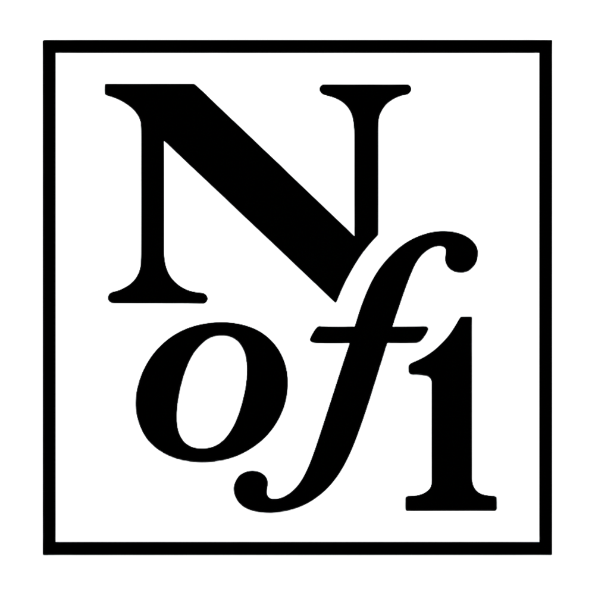
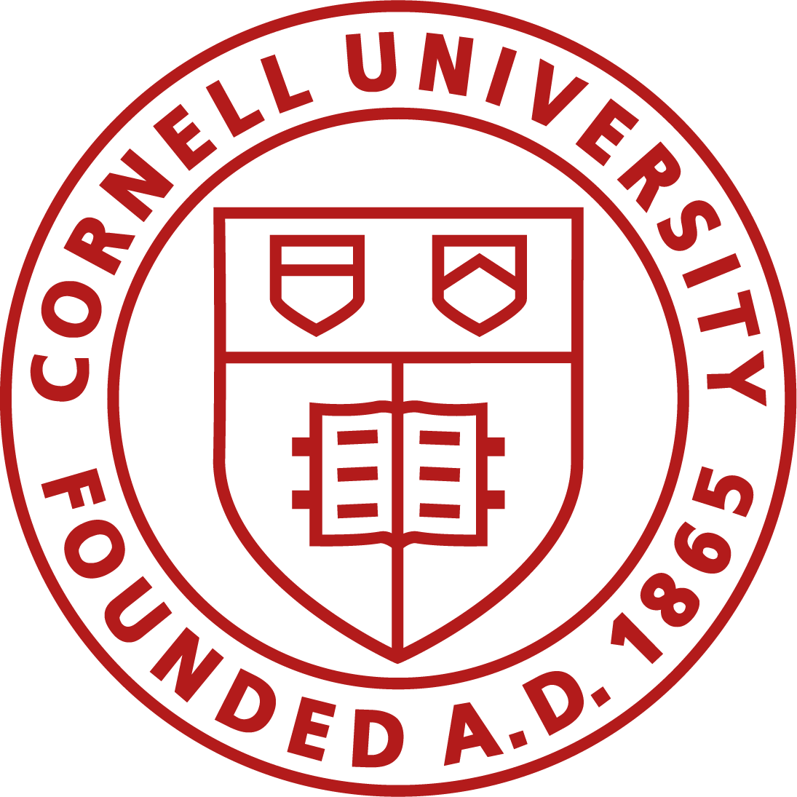
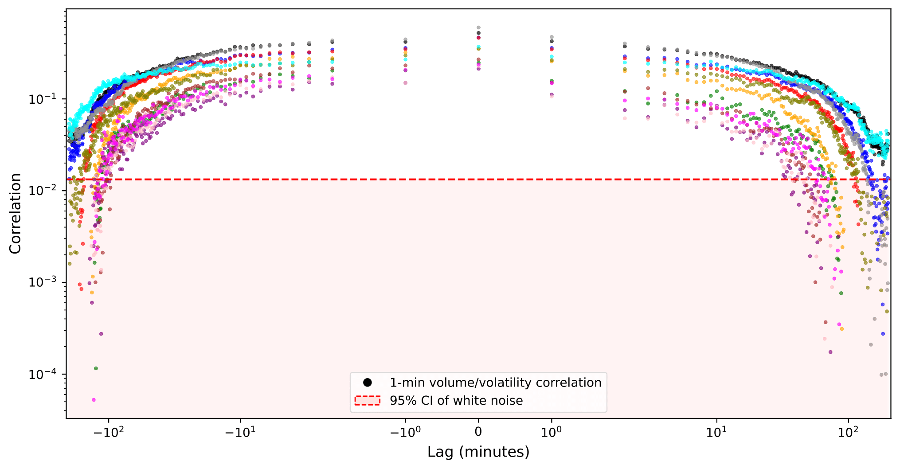
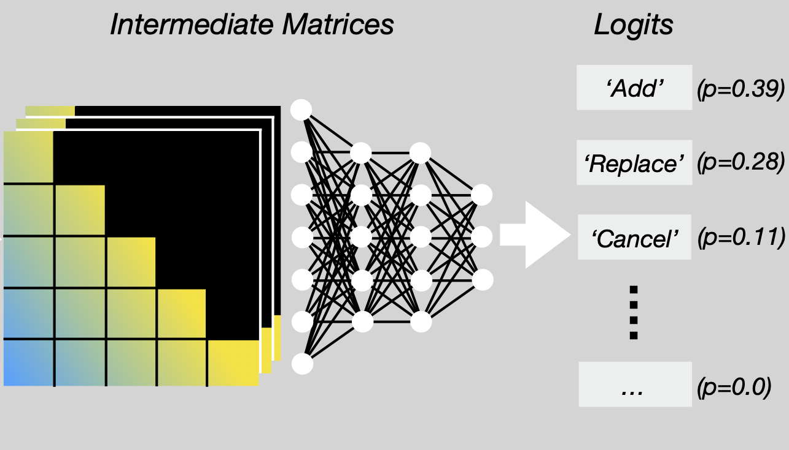
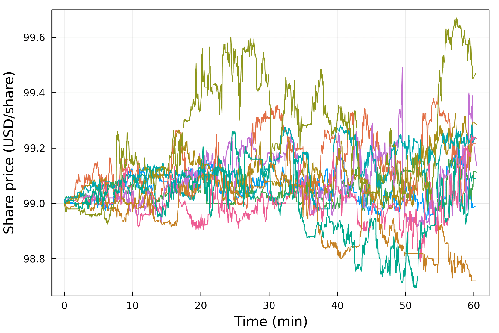
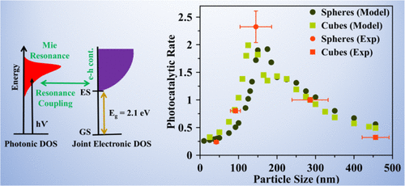
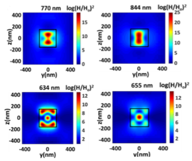

Aaron Wheeler
Hi, I’m Aaron. I’m an engineer and researcher who enjoys building intelligent systems that help make sense of complex data. I work at Nof1, an AI research lab dedicated to financial markets. Before that, I completed my PhD at Cornell University, where I developed generative AI tools for modeling financial time series. One of my notable projects was MarketGPT, a large language model designed to forecast equity order flow. My work combines strong theoretical foundations with hands-on implementation, and I’m particularly interested in solving high-impact problems at the intersection of data, modeling, and decision-making. Before shifting my focus to machine learning, I worked in nanomaterials research and explored new methods for using cuprous oxide in photocatalysis.
Contact: aw843@cornell.edu.
Recent Experience

Nof1
Lead Engineer (2025 — present)
Building agentic software applications and training models using frontier AI research.

Cornell University
Machine Learning Researcher & Teaching Assistant (2020 — 2024)
See research below. I applied the ideas behind Large Language Models (LLMs) to non-language domains, including financial time series. I also helped instruct courses on computational optimization, quantitative finance, and data science and machine learning for the College of Engineering.
 Oklahoma State University
Oklahoma State University
Materials Science Researcher (2018 — 2020)
As a Niblack Scholar, I received funding to spend my summer and school year developing a novel photocatalytic process with the Andiappan group. This work led me to a first-author publication, win a research award, and obtain a patent.
Research
My work connects low-level mechanisms to high-level system behavior. This perspective has guided my research across AI, complex systems, and physical science, and has equipped me with a diverse set of tools—generative modeling, simulation, and experimental validation—for tackling hard, interdisciplinary problems.

A Unified Framework for Validating Simulated Financial Market BehaviorA. Wheeler*, J.D. Varner.
Working title. In preparation.
This work revisits statistical properties of real markets at varying time granularity and introduces quantitative benchmarks for assessing the realism of synthetic market data.

MarketGPT: Developing a Pre-trained Transformer (GPT) for Modeling Financial Time SeriesA. Wheeler*, J.D. Varner.
arXiv preprint, 2024.
[arXiv] [code]
We trained a custom LLM from scratch that generates realistic order sequences and captures high-level market dynamics across millions of tokens.

Scalable Agent-Based Modeling for Complex Financial Market SimulationsA. Wheeler*, J.D. Varner.
Presented at JuliaCon 2023.
[arXiv] [code] [JuliaCon 2023 Talk]
We simulated thousands of agents and multiple assets in real time using a parallelized agent-based market system.

Structure–Property–Performance Relationships of Cuprous Oxide Nanostructures for Dielectric Mie Resonance-Enhanced PhotocatalysisR.T.A. Tirumala*, S. Gyawali*, A. Wheeler*, S.B. Ramakrishnan, R. Sooriyagoda, F. Mohammadparast, N. Khatri, S. Tan, A.K. Kalkan, A.D. Bristow, M. Andiappan.
ACS Catalysis, 2022.
[ACS Catalysis]
We displayed that dielectric Mie resonances in Cu₂O nanoparticles enhance photocatalytic activity by up to an order of magnitude.

Excitation Dynamics and Dielectric Resonance Energy Transfer in Cu₂O NanocubesS. Gyawali*, R. Sooriyagoda, A. Wheeler, R.T.A. Tirumala, S.B. Ramakrishnan, F. Mohammadparast, S. Tan, A.K. Kalkan, M. Andiappan, A.D. Bristow
Frontiers in Optics + Laser Science, 2021.
[Optica]
This work shows how specially shaped particles can better absorb light and make solar energy conversion more effective.
* asterix indicates "first" author.
Education
Cornell University
Ph.D., Chemical Engineering with a minor in Computer Science (2020 — 2024)
My concentration was in computational modeling and applied mathematics, and I was fortunate to recieve guidance from my PhD committee: Profs.
Jeffrey Varner (chair), Fengqi You, and David Bindel.
Oklahoma State University
B.S., Chemical Engineering (2016 — 2020)
In addition to research, I was heavily involved on campus and held many leadership positions, including President of my fraternity, VP of the governing council for Men's Greek Life, executive board member of the Student Government, among others.